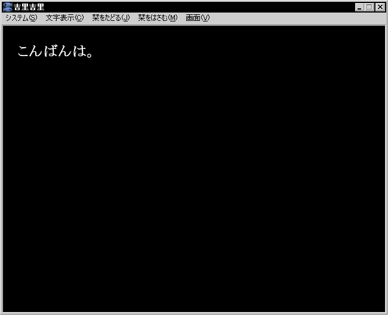

では、試しに何かを表示してみましょう。scenario フォルダの中には、
first.ks というファイルがあると思います。このファイルが一番最初に読み込まれるシナリオファイルです。
標準の状態では、以下のような内容が書き込まれています。
[wait time=200]
*start|スタート
[cm]
こんにちは。
いきなりごちゃごちゃ書いてあって困るかと思いますが、「こんにちは。」と書いてある行のみ注目してください。この「こんにちは。」の代わりに、なにか表示したい文字をエディタで書き込んでみてください。たとえば、「こんばんわ。」でもかまわないです。
そうしたら、吉里吉里を起動し、[フォルダ/アーカイブ選択]のダイアログボックスが開いたら、あなたの作ったプロジェクトフォルダを指定して [OK] ボタンを押します。
指定するのはプロジェクトフォルダです。first.ks ではありません。

「こんばんわ。」
すると、真っ黒な画面に「こんばんわ。」と表示されましたね。背景を指定するのは後
( → 背景を表示しよう ) で説明します。
とにかく、この「こんにちは。」の代わりに表示したい文字を書き込めば、このように表示させることができるのです。